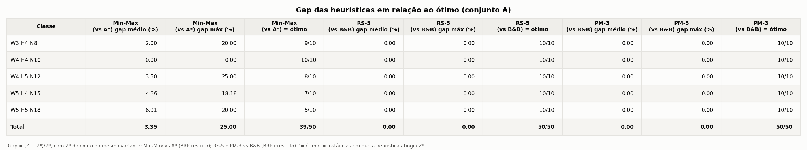
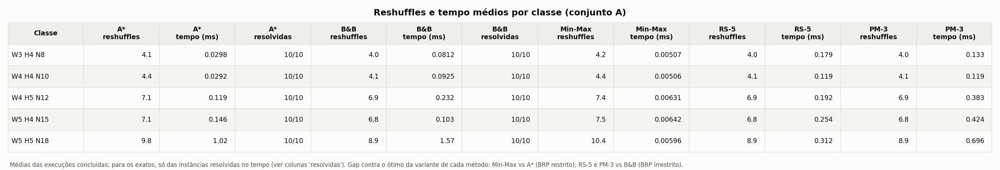
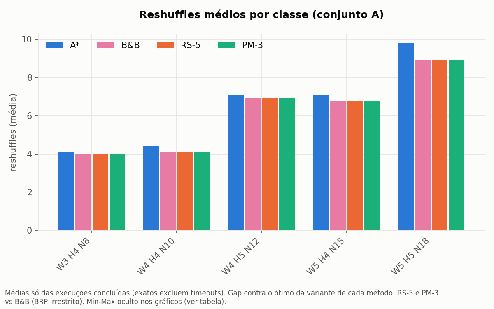
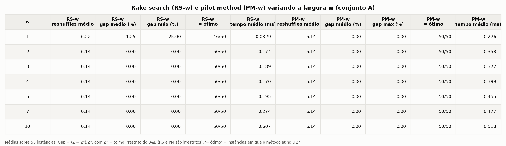
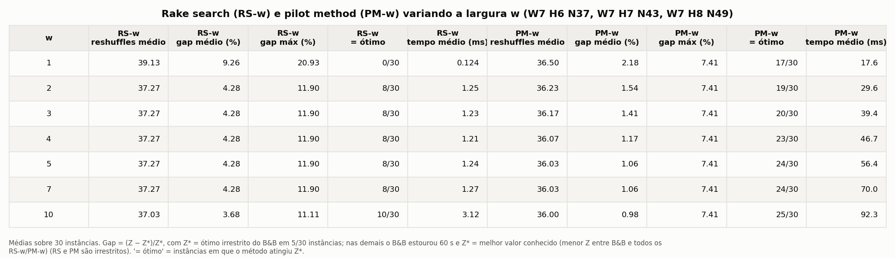
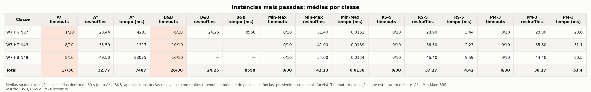
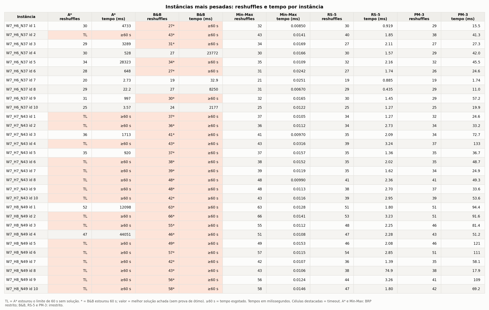

Block Relocation Problem: heurísticas x métodos exatos
A*, B&B (DFBB), Min-Max, RS-w (rake search) e PM-w (pilot method) nas instâncias da disciplina.
Abrir o visualizador passo a passo das soluções (conjunto A + instâncias pesadas) →Gap em relação ao ótimo (conjunto A)
Gap = (Z − Z*)/Z*. Min-Max vs A* (restrito); RS-5 e PM-3 vs B&B (irrestrito).

Reshuffles e tempo médios (conjunto A)

Reshuffles médios por classe

Variação da largura w (RS-w e PM-w)
Conjunto A

Instâncias pesadas (W7 H6–H8, 100% de ocupação)

Instâncias pesadas: exatos x heurísticas
Limite de 60 s. TL = A* sem solução; * = melhor solução do B&B sem prova de ótimo.

Por instância
